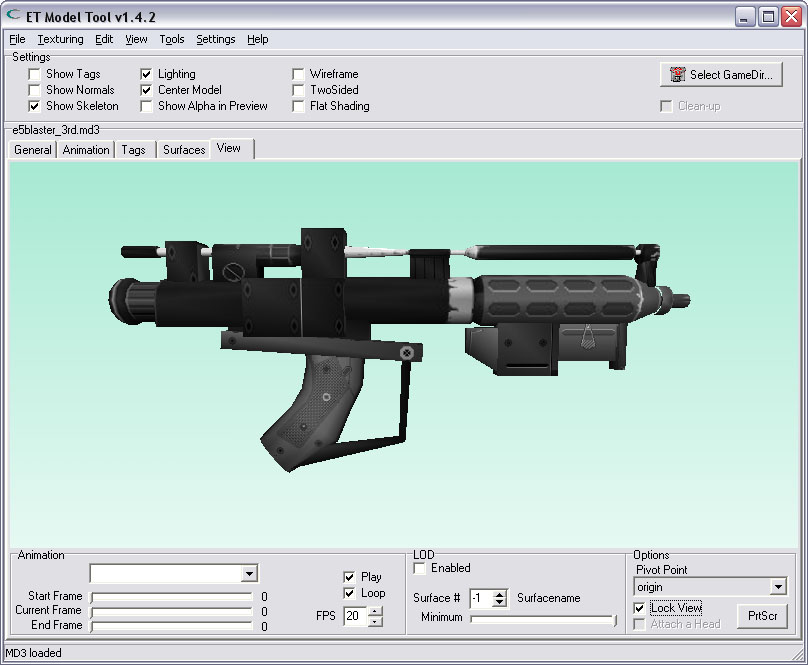
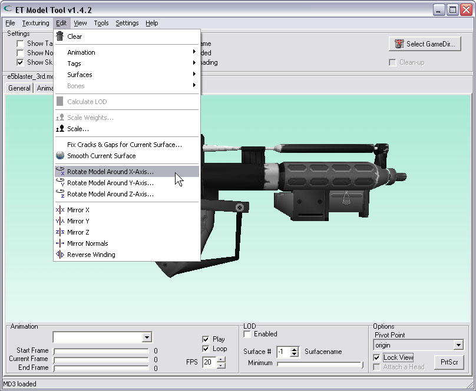
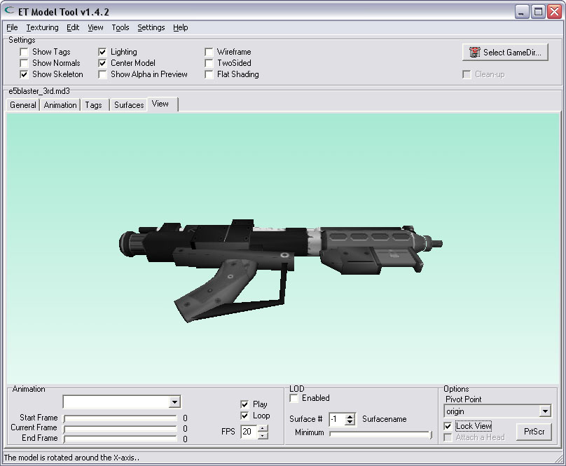
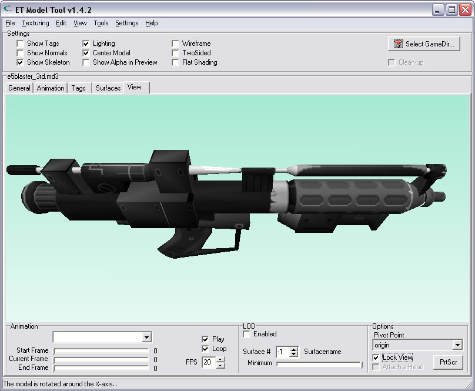
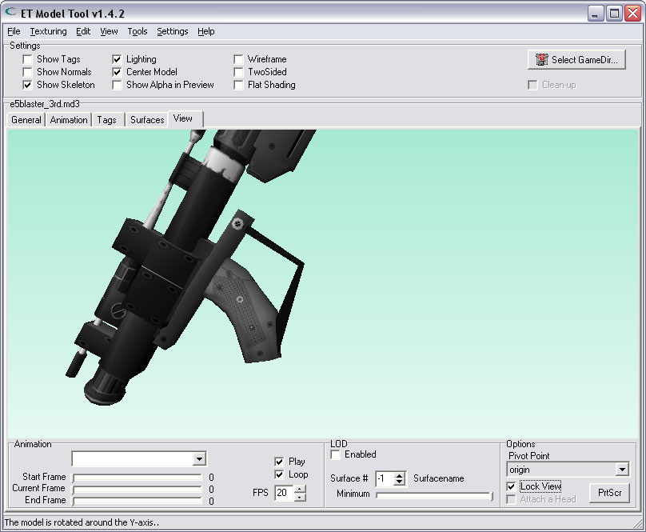
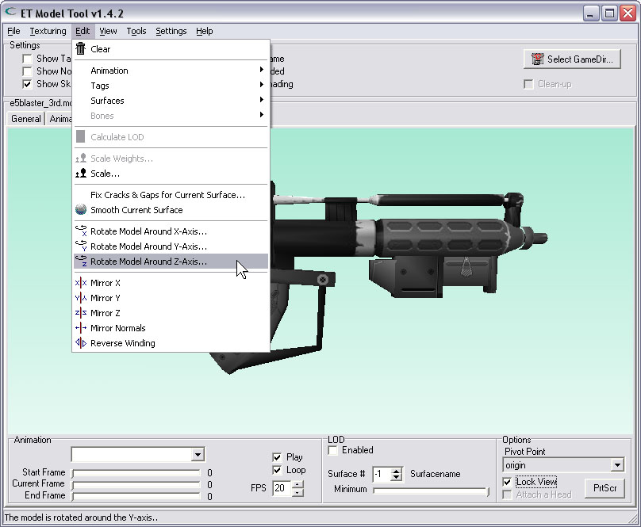
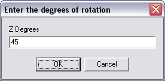
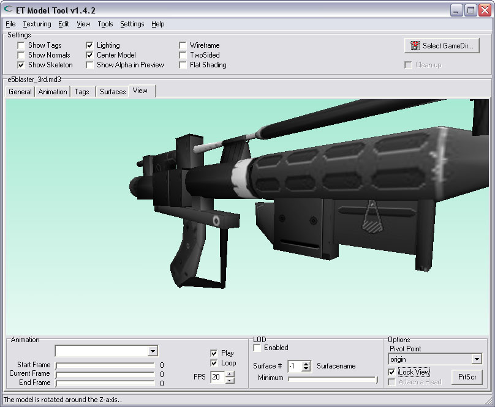
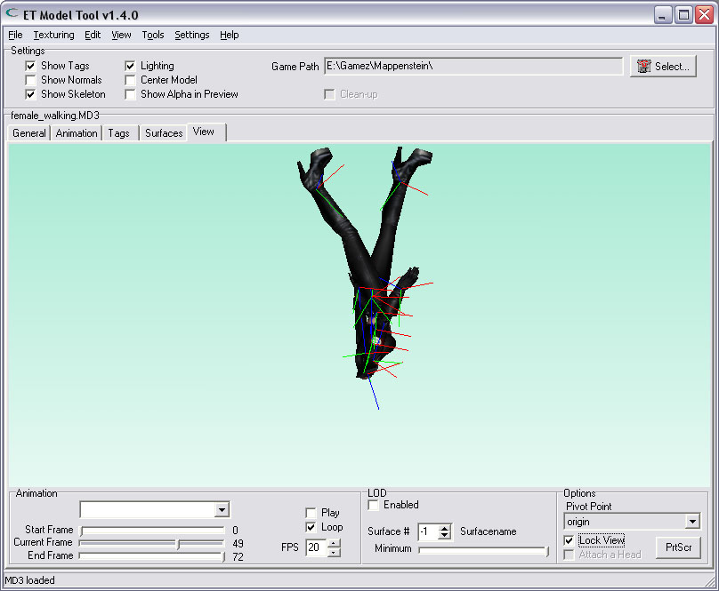
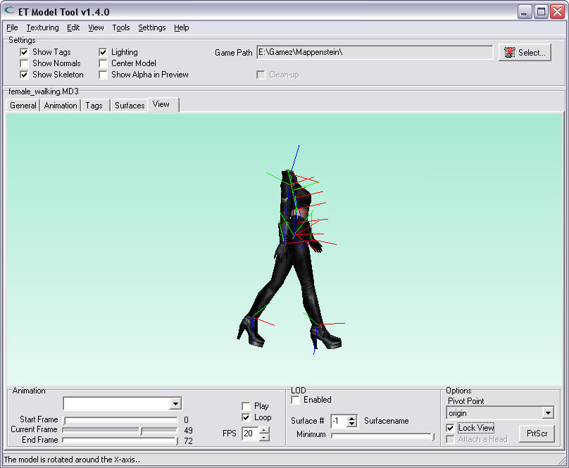

| Rotating an MD3 | |
| Rotating a model, by changing the 3D-View with the mouse (and/or keys), is only effective on-screen; It does not change the model itself. Sometimes You want to rotate a model, so when loaded into Radiant, it will face into another direction. Suppose You have an upside-down model and created a misc_gamemodel (or misc_model) in Radiant. The misc_gamemodel is easily rotated in Radiant, but when You would load that MD3 in a script_mover it would still be upside-down. You can correct the model by rotating it 180 degrees around the X-axis. After that, it will be loaded correctly into a script_mover. | |
| Note: Rotating an MD3 is functional for any MD3, animated and/or non-animated. Any existing tags will also be rotated. | |
| Here is a model in its initial position: | |
|  | |
| Rotating around the X-axis | |
| To rotate the model around an axis, make a choice from the menu. | |
|  | |
| Angle in degrees | |
| A little dialog will pop-up, asking for the number of degrees to rotate the model. You can enter floating-point values (like 13.75 or 3.14). | |
| The result after rotating the model 60 degrees around the X-axis: | |
|  | |
| Negative numbers | |
| It is also possible to enter negative numbers, which will rotate the model in the opposite direction. | |
| The result after rotating the model -45 degrees around the X-axis: | |
|  | |
| Rotating around the Y-axis | |
| To rotate the model around the Y-axis, make the choice from the menu. | |
| In the dialog, enter the angle of rotation in degrees. | |
| The result after rotating the model 60 degrees around the Y-axis: | |
|  | |
| Rotating around the Z-axis | |
| To rotate the model around the Z-axis, make the choice from the menu. | |
|  | |
| In the dialog, enter the angle of rotation in degrees. | |
|  | |
| The result after rotating the model 45 degrees around the Z-axis: | |
|  | |
| Tag along | |
| This is an example of a animated model with several tags. If the model is rotated, all tags will also be rotated. | |
|  | |
| After rotating the model 180 degrees around the X-axis, it is upside-down.. As are the tags. | |
|  | |
| Thanks | |
| Thanks to eCo|ischbinz for creating the model of the E5-Blaster. www.eco-fairplay.com | |